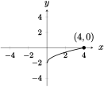
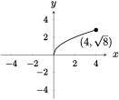
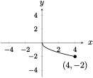
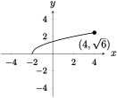
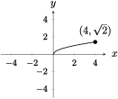
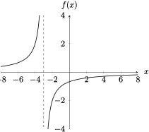
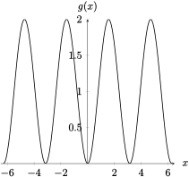
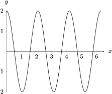
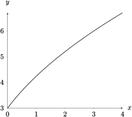
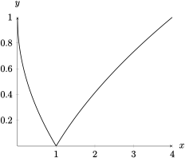

Section 1.3 New Functions from Old Functions
Objectives
Identify what transformations were applied to an essential function, and apply transformations in appropriate sequence to an essential function.
Describe the effect of taking absolute value of a function
Combine functions using algebraic operations (addition, subtraction, multiplication, division)
Compose and decompose functions using function composition, and determine the domain and range of composed functions.
Subsection 1.3.1 Before Class
https://mymedia.ou.edu/media/1.3-1/1_xf5w60k6Subsubsection 1.3.1.1 Combinations of Functions
Functions can be combined in several ways to create new functions
Function Operations.
Let \(f\) be a function with domain \(A\) and \(g\) be a function with domain \(B\text{.}\)
Addition/Subtraction: \(h(x) = (f\pm g)(x) = f(x)\pm g(x)\text{.}\) The domain of \(h(x)\) is \(A\cap B\text{.}\)
Multiplication: \(j(x) = (fg)(x) = f(x)\cdot g(x)\text{.}\) The domain of \(j\) is \(A\cap B\text{.}\)
Division: \(k(x) = \lrpar{\dfrac{f}{g}}(x) = \dfrac{f(x)}{g(x)}\text{,}\) provided that \(g(x)\neq 0\text{.}\) The domain of \(k(x)\) is \(\lrbrace{x\in A\cap B\mid g(x)\neq 0}\)
Example 1.3.1.
If \(f(x) = \sqrt{3-x}\) and \(g(x) =\sqrt{x^2-1}\text{,}\) write (i) \(f+g\text{,}\) (ii) \(f-g\text{,}\) (iii) \(fg\text{,}\) and (iv) \(f/g\) and find their domains.\((f+g)(x) = \sqrt{3-x}+\sqrt{x^2-1}\) with domain \((-\infty,-1]\)
\((f-g)(x) = \sqrt{3-x}-\sqrt{x^2-1}\) with domain \((-\infty,-1]\)
\((fg)(x) = \sqrt{-x^3+3x^2+x-3}\) with domain \((-\infty,-1]\)
\((f/g)(x) = \sqrt{\dfrac{3-x}{x^2-1}}\) with domain \((-\infty,-1)\)
Example 1.3.2.
Find the domain of the function \(f(x) = 6x^4 + 14x + \dfrac{\cos x}{x^2-1}\)Example 1.3.3.
Find the domain of the function \(\dfrac{\sqrt{x}}{x^2-x-6}\text{.}\)Example 1.3.4.
Find the domain of the function \(x|x|\text{,}\) and sketch the graph.The domain is \((-\infty,\infty)\text{.}\)
Subsubsection 1.3.1.2 Transformations of Functions
Vertical and Horizontal Shifts.
Let \(c \gt 0\text{.}\) To obtain the graph of
\(y = f(x) + c\text{,}\) shift the graph of \(y = f(x)\) \(c\) units up.
\(y = f(x) - c\text{,}\) shift the graph of \(y = f(x)\) \(c\) units down.
\(y = f(x+c)\text{,}\) shift the graph of \(y = f(x)\) \(c\) units left.
\(y = f(x-c)\text{,}\) shift the graph of \(y = f(x)\) \(c\) units right.
Vertical and Horizontal Stretching/Reflecting.
Let \(c \gt 1\text{.}\) To obtain the graph of
\(y = c\cdot f(x)\text{,}\) stretch the graph of \(y = f(x)\) vertically by a factor of \(c\text{.}\)
\(y = \lrpar{\dfrac{1}{c}}f(x)\text{,}\) shrink the graph of \(y = f(x)\) vertically by a factor of \(c\text{.}\)
\(y = f(c\cdot x)\text{,}\) shrink the graph of \(y = f(x)\) horizontally by a factor of \(c\text{.}\)
\(y = f\lrpar{\dfrac{x}{c}}\text{,}\) stretch the graph of \(y = f(x)\) horizontally by a factor of \(c\text{.}\)
\(y = -f(x)\text{,}\) reflect the graph of \(y = f(x)\) about the \(x-\)axis.
\(y = f(-x)\text{,}\) reflect the graph of \(y = f(x)\) about the \(y-\)axis.
Subsection 1.3.2 Pre-Class Activities
Example 1.3.5.
If \(f(x) = \sqrt{3-x}\) and \(g(x) = \sqrt{x^2-1}\text{,}\) write \((g/f)(x)\) and find its domain.Example 1.3.6.
Why do we even need to think about domain when working with a function?Example 1.3.7.
Describe the transformations needed to transform the graph \(f(x) = x^3\) into the graph of \(g(x) = -4(x+3)^3 + 1\text{.}\)Move left 3
Then reflect vertically
Then stretch vertically by a factor of 4
Then shift up 1
Subsection 1.3.3 In Class
Example 1.3.8.
The graph of \(y = \sqrt{x}\) is given to you below. Match the transformation with the appropriate transformed graph below. All graphs are of the form \(2f(x), f(2x), f\left(\dfrac{1}{2}x\right)\text{,}\) etc.Vertical shrink
Vertical stretch
Vertical shift
Horizontal stretch
Horizontal shrink
Horizontal shift
Vertical reflection
- 
- 
- 
- 
- 
Vertical stretch
Vertical shift
Horizontal shrink
Vertical reflection
Horizontal shift
Vertical shrink
Horizontal stretch
Example 1.3.9.
Sketch the graph of the function \(f(x)=x^2-2x+3\) by applying transformations to the base graph of \(f(x)=x^2\text{.}\)Example 1.3.10.
Sketch the graphs of the given functions by using transformations to a base graph:\(\displaystyle f(x) = \dfrac{2}{x+3}\)
\(\displaystyle g(x) = 1-\cos 2x\)
\(\displaystyle h(x) = |x^2-1|\)
- 
- 
Function Composition.
Given two function \(f\) and \(g\text{,}\) the composite function \(f\circ g\) is defined by \((f\circ g)(x) = f(g(x))\text{.}\)
The domain of \(f\circ g\) is the set of all \(x\) in the domain of \(g\) such that \(g(x)\) is in the domain of \(f\text{.}\)
Example 1.3.11.
For each function below, (1) find the domain of the composite function, (2) completely decompose the function into smaller ones.\(\displaystyle f(x) = \dfrac{1}{x+2}\)
\(\displaystyle q(x) = (2x+1)^5\)
\(\displaystyle s(h) = \sin \left(5h^2 + \dfrac{1}{h}\right)\)
\(\displaystyle y(r) = \dfrac{5.317}{(2r^5 + 1.7)^2}\)
\(\displaystyle g(x) = \tan (x^2)\)
The domain is \((-\infty,-2)\cup (-2,\infty)\text{.}\) The function can decompose as \(f(x) = a(b(x))\text{,}\) where \(a(x) = \dfrac{1}{x}, b(x) = x+2\)
The domain is \((-\infty,\infty)\text{.}\) The function can decompose as \(q(x) = a(b(x))\text{,}\) where \(a(x) = x^5, b(x) = 2x+1\)
The domain is \((-\infty,0)\cup (0,\infty)\text{.}\) The function can decompose as \(s(h)) = a(b(h))\text{,}\) where \(a(h) = \sin h, b(h) = 5h^2 + \dfrac{1}{h}\)
The domain is \(\lrpar{-\infty, \sqrt[5]{\dfrac{-1.7}{2}}}\cup \lrpar{\sqrt[5]{\dfrac{-1.7}{2}},\infty}\text{.}\) The function can decompose as \(y(r) = a(b(r))\text{,}\) where \(a(r) = \dfrac{5.317}{r^2}, b(x) = 2r^5+1.7\)
The domain is \(x\neq \sqrt{\dfrac{\pi}{2}+\pi k}\text{,}\) where \(k\in\Z\text{.}\) The function can decompose as \(g(x) = a(b(x))\text{,}\) where \(a(x) = \tan x, b(x) = x^2\)
Example 1.3.12.
If \(f(x) = \sqrt{x}\) and \(g(x) = \sqrt{2-x}\text{,}\) find\(\displaystyle f\circ g\)
\(\displaystyle g\circ f\)
\(\displaystyle f\circ f\)
\(\displaystyle g\circ g\)
\(\displaystyle \sqrt{\sqrt{2-x}} =\sqrt[4]{2-x}\)
\(\displaystyle \sqrt{2-\sqrt{x}}\)
\(\displaystyle \sqrt{\sqrt{x}} = \sqrt[4]{x}\)
\(\displaystyle \sqrt{2-\sqrt{2-x}}\)
Example 1.3.13.
Let \(k(x) = \sec(x^2)\tan(x^2)\text{.}\) Find \(f,g\) such that \(k(x) = f(g(x))\text{.}\)Example 1.3.14.
Let \(f(x) = \cos^2 (x^2 + 9)\text{.}\) Find functions \(a,b,c\) such that \(f(x) = (a\circ b\circ c)(x)\)Example 1.3.15.
Given \(f(x) = x^2 + x -1\) and \(g(x) = 2-x\text{,}\) what is the equation of \(y =(f\circ g)(x)\text{?}\)Example 1.3.16.
If \(g(1) = 3\text{,}\) then what point must be on the graph of \(h(t) = -2g(t-1) + 6\text{?}\)Subsection 1.3.4 After Class Activities
Example 1.3.17.
For each function below, (i) identify the base graph, (ii) identify any transformation applied to the base graph, and (iii) sketch a rough graph of the function.\(\displaystyle y = 2\cos 3x\)
\(\displaystyle y = 3\sqrt{x+1}\)
\(\displaystyle y = |\sqrt{x} - 1|\)
-
The base graph is \(\cos x\text{.}\) We transform by compressing horizontally by 3, then stretching vertically by 2.
 -
The base graph is \(\sqrt{x}\text{.}\) First we shift left by 1, then stretch vertically by 3.
 -

Example 1.3.18.
Below is a table of input/output values for functions \(f\) and \(g\text{.}\)| \(x\) | \(1\) | \(2\) | \(3\) | \(4\) | \(5\) | \(6\) |
| \(f(x)\) | \(3\) | \(1\) | \(4\) | \(2\) | \(2\) | \(5\) |
| \(g(x)\) | \(6\) | \(3\) | \(2\) | \(1\) | \(2\) | \(3\) |
\(\displaystyle f(g(1))\)
\(\displaystyle g(f(1))\)
\(\displaystyle f(f(1))\)
\(\displaystyle g(g(1))\)
\(\displaystyle (g\circ f)(3)\)
\(\displaystyle (f\circ g)(6)\)
5
2
4
3
1
4
Example 1.3.19.
If you invest \(x\) dollars at at 6% interest compounded annually, then the amount \(A(x)\) of the investment after one year is \(A(x) = 1.06x\text{.}\)Find \(A\circ A\circ A\circ A\) and \(A\circ A\circ A\circ A\circ A\text{.}\)
What do the compositions represent in real-world terms?
Generalize your work in part (a); find a formula for the composition of \(n\) copies of \(A\text{.}\)
\(A\circ A\circ A\circ A = (1.06)^4x\) and \(A\circ A\circ A\circ A\circ A = (1.06)^5x\)
The compositions represent compounds of the investment.
\(\displaystyle (1.06)^nx\)
Example 1.3.20.
If \(g(x) = 2x + 1\) and \(h(x) =4x^2 + 4x + 7\text{,}\) find a function \(f\) such that \(f\circ g = h\text{.}\)Subsection 1.3.5 Section 1.3 Resources
Subsubsection 1.3.5.1 Function Operations
Function Composition
https://www.mathsisfun.com/sets/functions-composition.htmlCombining Functions
https://www.khanacademy.org/math/algebra-home/alg-functions/alg-combining-functions/a/introduction-to-combining-functionsMore Composition
https://www.khanacademy.org/math/algebra-home/alg-functions/alg-funciton-composition/a/introduction-to-function-compositionDomain of a Composition
https://courses.lumenlearning.com/ivytech-collegealgebra/chapter/find-the-domain-of-a-composite-function/
Subsubsection 1.3.5.2 Graph Transformations
Shifting Functions
https://www.khanacademy.org/math/algebra2/x2ec2f6f830c9fb89:transformations/x2ec2f6f830c9fb89:shift/e/shift-functionsReflecting Functions
https://www.khanacademy.org/math/algebra2/x2ec2f6f830c9fb89:transformations/x2ec2f6f830c9fb89:reflect/e/reflect-functionsScaling Functions Vertically
https://www.khanacademy.org/math/algebra2/x2ec2f6f830c9fb89:transformations/x2ec2f6f830c9fb89:scale/e/scale-functions-verticallyScaling Functions Horizontally
https://www.khanacademy.org/math/algebra2/x2ec2f6f830c9fb89:transformations/x2ec2f6f830c9fb89:scale/e/scale-functions-horizontallyVisualization Applet (works only for a handful of functions)
https://www.integral-domain.org/lwilliams/Applets/FunctionTransformation.htmlAnother Visualization Applet
http://www.sfu.ca/~jtmulhol/calculus-applets/GeoGebra-Worksheets/graphing-transformations.html